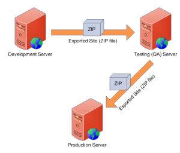

Exporting and importing sites
You can export and import website content and settings from one Kentico instance to another. You can use the import and export features to manually move websites or selected objects between development, testing and production (live) servers.

Moving objects between servers
When transferring data via import packages, we strongly recommend using exactly the same version for all of your instances. Importing of packages between different versions is possible with the following limitations:
You can import packages exported from older versions of Kentico, but the support only extends back to the previous major version. For example, only packages from Kentico 10 or newer can be imported to Kentico 11.
You CANNOT import packages from newer versions to older versions (including minor hotfix versions).
General
Export
Import
Export and ID values
The system cannot ensure that pages and objects have the same ID values after being exported from one environment to another. However, the export process preserves GUID values. Use GUID fields if you need to identify pages or objects that have been transferred across multiple environments.